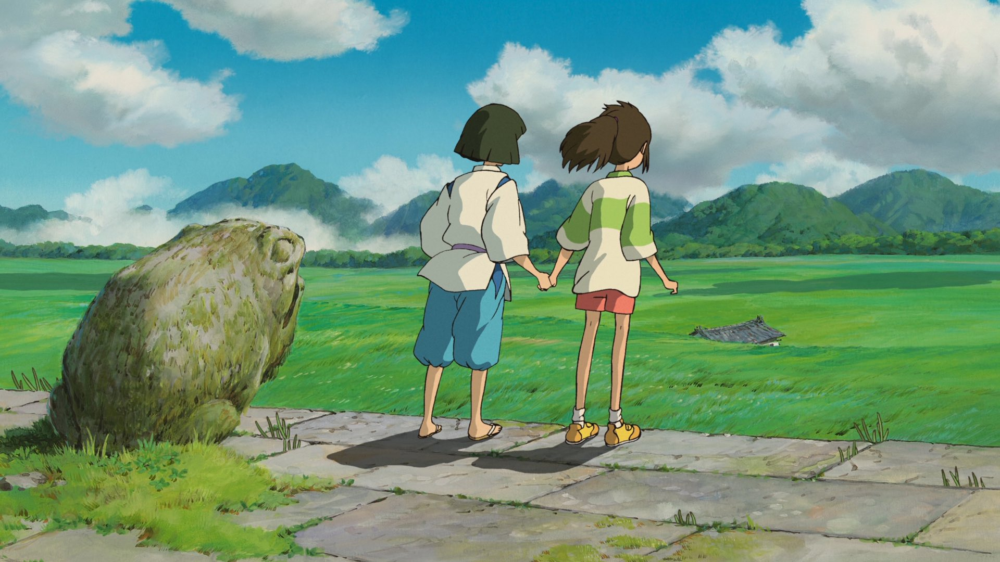

일본 영화
벚꽃이 떨어지는 속도가 초속 5cm래.
(2007)
감독 : 신카이 마코토
장르 : 애니메이션, 로맨스
출연 : 미즈하시 켄지 , 콘도 요시미 , 테라오 아야카
일본 애니메이션 감독인 신카이 마코토님의 작품입니다.
신기하게도 이 영화는 인트로와 1,2,3부로 나뉘어져 있습니다. 물론 전부 연결되는 내용이긴 합니다.
시대의 배경은 2000년대 초반으로, 아날로그적 감성이 굉장히 많이 묻어있어
그 시절 일본에 살아본것도 아니지만 굉장히 저의 마음을 울렸습니다.
장르가 로맨스이긴 하지만 첫사랑의 비극을 굉장히 조용히 표현하여
여운을 더욱 남기게한 작품인 것 같습니다.
나의 한줄평
' 첫사랑에 대한 이상과 현실은 다르다는 것을 잘 표현한 작품 '
악마는 약속을 하지 않아.
(2004)
감독 : 미야자키 하야오
장르 : 애니메이션 , 판타지
출연 : 기무라 타쿠야 , 미와 아키히로 등
살다보면 지브리 스튜디오라는 제작사를 한번쯤 들어봤을 겁니다.
토토로와 친구들이라는 제가 어렸을 적 굉장히 유명했던 작품을 만들었던 제작사 입니다.
사실 하울의 움직이는 성이라는 작품도 노래로 굉장히 유명합니다.
이 작품의 삽입곡, 그림체, 참신한 배경이 삼위일체처럼 조화를 이루어서
여운을 길게 남겨준 작품이라고 생각합니다.
유명한 OST인 "인생의 회전목마"는
세월이 지나도 여전히 언급되는 명곡이라고 생각합니다.
나의 한줄평
' 영화를 보다보면 내가 동화속에 빠진 기분이다. '
하늘이 맑아지고 소녀는 떠났습니다.
(2004)
감독 : 도이 노부히로
장르 : 판타지, 로맨스
출연 : 다케우치 유코, 나카무라 시도
저는 처음에 이 영화를 접하기 전엔 그저 평범한 영화 제목이라고 생각이 들었습니다.
보고나면 제목의 많은 의미가 담겨 있는 영화입니다.
장르가 로맨스이긴 하지만 가족애가 담겨져있는 진부하지않고 매우 감동적인 작품이였습니다.
극이 후반부로 갈수록 감동이 커 눈물샘을 자극하기도 합니다.
저는 사실 일본 영화 특유의 부자연스러운 연출이 때론 거부감이 들기도 했는데
이 작품을 접하고 나서 틀을 깨게 됬던 것 같습니다.
나의 한줄평
' 새벽에 혼자 보면 눈물샘이 자극되는 영화이다. '
이곳에서 이제 여러분은, 살인을 시작해주셔야 하겠습니다.
(2000)
감독 : 후카시쿠 킨지
장르 : 스릴러 , 액션
출연 : 기타노 다케시 , 후지와라 타츠야 , 마에다 아키 등
영화 배틀로얄은, 이름만 들으면 다들 잘 아실텐데요.
배틀로얄이라고 하면 생존자 여러명이 주어지고 최후의 1인만이 남으면 끝나는 룰 입니다.
우리가 흔히들 아는 게임 "배틀그라운드(PUBG)"도 배틀로얄을 모티브로 제작이 되었습니다.
그만큼 이 영화가 준 영향력은 크다고 생각합니다. 물론 원작은 소설이라고 합니다.
영화의 수위는 아무래도 배틀로얄이라는 컨셉이여서 매우 잔인하지만
잔인한 요소에 대한 거부감이 없으신 분들은 정말 재밌게 볼 수 있다고 생각합니다.
저는 보는 내내 정말 충격적이라고 생각했습니다.
단순한 잔인함이 아닌, 사람의 본능에 대한 잔인함이 돋보였다고 생각합니다.
이 영화를 보게된 계기도 배틀그라운드 라는 게임을 통해 알게되어 보게됬는데
생각했던거와 달리 정말 재밌게 본 영화였습니다.
나의 한줄평
' 최근엔 이런 종류의 영화가 많아서 지금 보면 그저 그런 영화일수도 있지만
2000년에 이 작품을 만들었다는걸 감안하면 매우 좋은 영화 '
자신의 이름을 소중히 하렴.
(2001)
감독 : 미야자키 하야오
장르 : 애니메이션, 판타지, 어드벤쳐
출연 : 이리노 미유, 히이라기 루미, 나츠키 마리

저의 최고의 일본영화는 바로 센과 치히로의 행방불명입니다.
저는 이 영화를 10살 무렵에 봤었는데요. 어렸을 땐 그저 여자아이가
모험을 하고 나오는 등장인물들이 무서웠던 기억밖에 없었는데
성인이 될 무렵에 봤을 땐 정말 벅차오르는 감동과 작중 은은하게 많은 의미가가 담겨있는
내용들, 독특하고 어떻게 하면 이런 캐릭터를 상상할 수 있을까 싶은 표현력.
많은 사람들이 명작이라고 하는것은 마땅한 이유가 있다. 라고 생각이 드네요.
이 작품 또한 앞서 언급한 지브리 스튜디오에서 제작했습니다.
지브리 스튜디오에서 제작한 작품들에 OST들은 하나같이 듣기좋고 유명한 것 같습니다.
나의 한줄평
' 애니메이션만이 보여 줄 수 있는 것의 모든것을 보여준 영화라고 생각합니다. '
ありがとう !
( 감사합니다 ! )
일본영화를 나열하면서 느낀 것이, 실사물 보다는 애니메이션물이 많다는 것을 느꼈네요.
그만큼 일본이 2D 애니메이션 하나만큼은 정말 잘 만드는 것 같습니다.
일본 영화는 로맨스나 애니메이션 장르는 자기만의 감성이나 정서가
아기자기 한게 매력인 것 같습니다.
다른 나라의 영화 리뷰도 보고 싶으시다면 사람을 클릭 해주세요 !